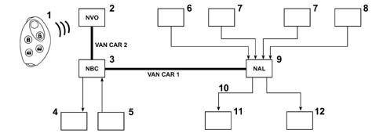
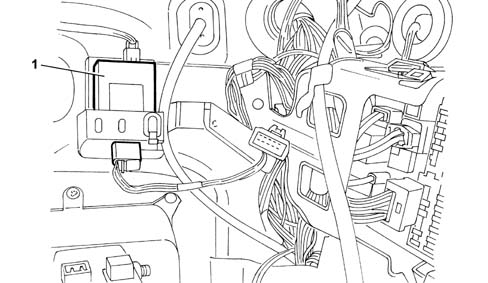
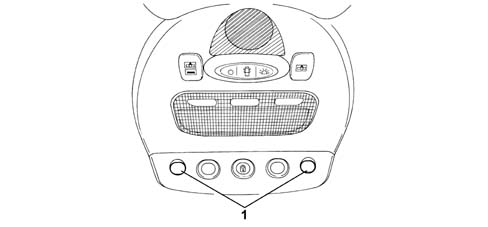
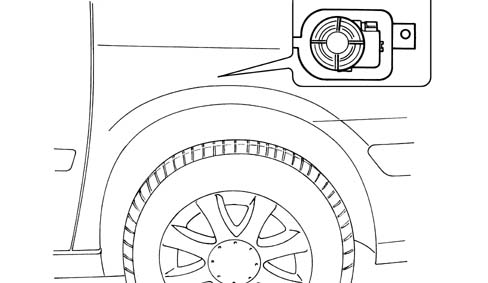
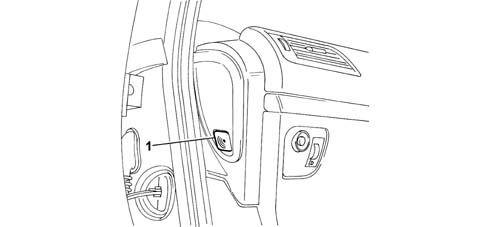
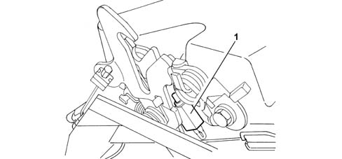

ALARM NODE (NAL)
- Path
- Descriptions > 55 ELECTRICAL EQUIPMENT > 5505 INSTRUMENT/GAUGE ELECTRICAL CIRCUITS > 5505A MULTI-FUNCTION COMPONENTS > ALARM NODE (NAL)
- Kind
- system description
- Applies to
- all engines; all production periods
- Interactive page
- https://sloeber94.github.io/elrnDB-fUlss/en/#/179000403
Applies to: all engines; all production periods
INTRODUCTION
The vehicle is equipped with an electronic alarm that can only be activated using the remote control, with perimeter (exterior) and volumetric (interior) protection.
The alarm is the ultrasound type and has the task of managing:
- the volumetric detection,
- the supply and management of the ultrasound sensors,
- the perimeter detection,
- the siren.
OPERATING PRINCIPLES
The various connections are illustrated in the diagram below.

- 1 - remote control
- 2 - NVO receiver
- 3 - NBC
- 4 - Direction indicators
- 5 - Switches in door locks and rear tailgate
- 6 - Volumetric surveillance off button
- 7 - Volumetric sensors
- 8 - Bonnet lock contact
- 9 - NAL
- 10 - Serial line
- 11 - Siren
- 12 - Alarm state LED
Volumetric surveillance
Volumetric surveillance is guaranteed by two ultrasound sensors, located in the front courtesy light, which allow movement or a variation in volume to be detected.
Perimeter control
The perimeter control is managed:
- by the NBC as far as the signals coming from the contacts in the 4 doors and the tailgate are concerned.
- by the NAL as far as the signal coming from the switch on the bonnet release mechanism is concerned.
In the case of a break in:
- the NBC directly activates the direction indicators,
- the NAL activates the auditory warning (sire) and the LED.
Signals
The NAL controls the alarm state LED and the siren (via the serial line) and the NBC controls the activation of the direction indicators.
The flow of information exchanged on the VAN is illustrated below.
NAL input signals:
- alarm activation
- perimeter alarm
- diagnosis request
NAL output signals:
- event managed by the module,
- response to diagnosis request
Status display through LEDs
The system status is indicated through the following lighting up modes of the LED in the dashboard:
- LED flashing (frequency 1HZ): alarm activated,
- LED flashing rapidly (frequency 5HZ): break in attempt being memorized,
- LED off: alarm not activated,
- LED on (constantly): alarm activated with inhibition of volumetric surveillance function.
COMPONENTS
The Alarm Node: is located at the side of the NBC and is fastened to the flame retardant parition by means of a support and can be removed from the support by sliding it downwards.

- 1 - NAL
The ultrasound sensors: are located in the front courtesy light.

- 1 - Ultrasound sensors
The siren. is fastened to the support located between the wing and the right front shoulder of the wing.

The volumetric surveillance off button: is located on the left side of the dashboard for left hand drive vehicles and on the right side for right hand drive vehicles.

- 1 - Volumetric surveillance off button
The bonnet surveillance switch: is fastened to the bonnet lock.

- 1 - Bonnet switch
FUNCTIONS
Activation/deactivation of alarm
The alarm can only be activated via the remote control. Its engagement is signalled by the flashing of the direction indicators and then the flashing of the LED located in the instrument panel.
Locking the doors by turning the key does not switch the anti-theft device on.
The alarm can be deactivated:
- using the remote control, the direction indicators flash rapidly for a few seconds,
- through recognition of the key by the Code system. With the alarm switched on, when one of the doors is opened using the key (an operation which does not switch off the alarm), there are 10 seconds to allow the Code to recognize the key.
Perimeter control function
The perimeter surveillance function is activated 5 seconds after the alarm is switched on.
The function is managed by the NBC and the siren is activated in the following circumstances:
- following a variation in the condition of one of the switches in the door locks,
- following the disappearance of the +Bat,
- following the key being turned to the ON or starting position using a key not recognized by the Code system.
The change in state of one of the switches located in the locks produces the reactivation of the NBC (door or boot opening) which, in turn, reactivates the +VAN network.
The NBC transmits the siren activation order to the NAL and it remains operational for 30 seconds.
Volumetric detection and lid opening function
The volumetric surveillance function is activated 45 seconds after the alarm is switched on.
The volumetric and bonnet measurements are managed by the NAL and the siren is activated under the following circumstances:
- when the volumetric sensors detect a significant movement of air inside the passenger compartment,
- following a variation in the condition of the switch located on the bonnet release mechanism.
In the case of a break in, the NAL recalls current ot the DATA/ with a consequent reactivation of the NBC which, in turn, reactivates the network with +VAN.
Volumetric surveillance disengagement function
The volumetric surveillance can be excluded by keeping the button pressed for more than 1 second before switching on the alarm. In this case the signal LED remains on.
If the alarm is not switched on within 5 minutes of pressure the exclusion button, the system activates both surveillance functions.
When the alarm is next switched on both the surveillance functions are activated except if the volumetric function is excluded.
Particular functions
Following a request to switch on the alarm via the remote control, if a part that opens (including the bonnet) is not properly shut, an auditory signal is produced.
If the condition of this part that opens does not change after 45 secs, the alarm is activated.
If the part that opens is closed before the alarm is activated, the NBC produces an alarm activatation request and operates the LED.
Definition of connections
NAL: 12-way blue connector
Pin | Function |
|---|---|
1 | not connected |
2 | alarm siren control |
3 | not connected |
4 | Earth |
5 | alarm interruption control |
6 | + VAN |
7 | + BATT S NBC |
8 | not connected |
9 | Bonnet open information |
10 | VAN DATA CAR 2 |
11 | Volumetric sensors switched off information |
12 | VAN DATAB CAR 2 |
NAL: 12-way brown connector
Pin | Function |
|---|---|
1 | Ultrasound receiver signal |
2 | not connected |
3 | Ultrasound transmitter signal |
4 | Ultrasound receiver earth |
5 | not connected |
6 | Ultrasound transmitter earth |
2-way LED
Pin | Function |
|---|---|
1 | Volumetric sensors switched off information |
2 | Earth |
Volumetric protection off switch
Pin | Function |
|---|---|
1 | not connected |
2 | not connected |
3 | Earth |
4 | not connected |
5 | not connected |
6 | volumetric protection interruption control |
Alarm siren
Pin | Function |
|---|---|
1 | Earth |
2 | alarm siren control |
3 | + BATT S NBC |
Bonnet switch
Pin | Function |
|---|---|
1 | Bonnet open information |
2 | Earth |